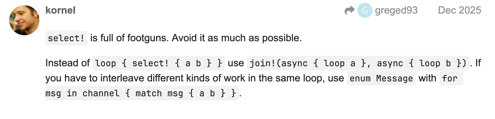

Async Rust gotcha: evolving tokio::select! code has sharp edges
… or a story about Cancellation safety, FutureExt::then(), insufficient tests, and I/O actors.
TL;DR #
stream.next().then()is not cancellation safe if you have an await point inside the async closure – data can be lost.- Make your tests exercise
Poll::Pendingpaths. If you test withtokio::io::duplex(N), it rarely goes pending, so cancellation bugs might not show up. - Be careful iterating your application with
tokio::select!, because the missing or simple tests could lead to data losses due to cancellation safety issues. Assume any branch can be dropped at any.awaitunless you’ve designed it to be restart/cancel-safe. - Follow the single I/O actor model – no mutexes, no sharing I/O objects.
- Use
tokio::mpscpermits withreserve()to consume data from streams only when you have capacity on the next step (producer side). This propagates backpressure and preserves data.
Intro #
Rust adoption keeps accelerating, and many new teams are writing Async Rust for production systems for the first time. Developers arrive from both low-level systems backgrounds and enterprise ecosystems – but Async Rust, and Tokio especially, comes with a few crucial concepts that can make or break your ability to build high-performance, zero-cost abstraction networking code.
This post is a short case study in how a seemingly harmless refactor can silently break cancellation safety and lead to surprising runtime behavior.
We will start with a simple stream-drain loop, add cancellation, add a heartbeat, then see how FutureExt::then() creates a drop-on-cancel hazard. Finally, we will fix it with an I/O actor and explicit backpressure.
Initial code: drain a stream into an AsyncWrite
#
We start with a straightforward loop: where every message is read until the end of the stream occurs, and is processed by writing to a AsyncWrite object:
use bytes::Bytes;
use futures::{Stream, StreamExt};
use tokio::io::{self, AsyncWrite, AsyncWriteExt};
pub async fn drain_stream_to_writer<S, W>(mut stream: S, mut out: W) -> io::Result<()>
where
S: Stream<Item=Bytes> + Unpin,
W: AsyncWrite + Unpin,
{
while let Some(msg) = stream.next().await {
out.write_all(&msg).await?;
out.flush().await?;
}
Ok(())
}
This code is straightforward and easy to reason about: if you pull an item, you fully process it before pulling the next one. If there is no capacity in the AsyncWrite, the async code returns Poll::Pending, and no more items are read from the stream.
Adding cancellation #
Let’s assume that later, we decided to add a cancellation mechanism. We need to stop the processing before EOF of the stream. For example, the program gets a SIGTERM. In order to do that, we can add a classic “loop { select! { ... } }” pattern and a cancellation token. The code could look like the following:
use bytes::Bytes;
use futures::{Stream, StreamExt};
use tokio::io::{self, AsyncWrite, AsyncWriteExt};
use tokio_util::sync::CancellationToken;
pub async fn drain_stream_to_writer<S, W>(
mut stream: S,
mut out: W,
cancel: CancellationToken,
) -> io::Result<()>
where
S: Stream<Item=Bytes> + Unpin,
W: AsyncWrite + Unpin,
{
loop {
tokio::select! {
_ = cancel.cancelled() => {
// decide what "shutdown" means for your app:
// flush()? and/or shutdown()?
break; // exit from the loop
}
maybe_msg = stream.next() => {
match maybe_msg {
Some(msg) => {
out.write_all(&msg).await?;
out.flush().await?;
}
None => break, // EOF for the stream
}
}
}
}
Ok(())
}
When the cancellation signal is received, the drain_stream_to_writer exits and all variables are dropped. This includes the stream variable and the out AsyncWrite object. No more future poll() functions are called, all resources are freed.
Why this might not do what you expect #
Once select! picks the stream branch and you enter it, you might spend time inside:
write_all().awaitflush().await
During that time, the cancellation branch is not being polled. This means that this structure does not interrupt an in-flight write. It only checks cancellation between loop iterations.
The tempting refactor: FutureExt::then()
#
If you look closer at the code, you can see that what we need is “read the next item, then process it in one future that can return Poll::Pending to select!.”
If we read the Future and FutureExt docs, or ask an LLM, we can bump into FutureExt::then().
The FutureExt::then() doc string in version 0.3.31:
/// Chain on a computation for when a future finished, passing the result of
/// the future to the provided closure `f`.
///
/// The returned value of the closure must implement the `Future` trait
/// and can represent some more work to be done before the composed future
/// is finished.
///
/// The closure `f` is only run *after* successful completion of the `self`
/// future.
///
/// Note that this function consumes the receiving future and returns a
/// wrapped version of it.
/// ```
fn then<Fut, F>(self, f: F) -> Then<Self, Fut, F>
where
F: FnOnce(Self::Output) -> Fut,
Fut: Future,
Self: Sized,
{
assert_future::<Fut::Output, _>(Then::new(self, f))
}
The FutureExt::then() looks exactly like what we need, and we can rewrite our code using it:
use bytes::Bytes;
use futures::{Stream, StreamExt, FutureExt};
use tokio::io::{self, AsyncWrite, AsyncWriteExt};
use tokio_util::sync::CancellationToken;
pub async fn drain_stream_to_writer<S, W>(
mut stream: S,
mut out: W,
cancel: CancellationToken,
) -> io::Result<()>
where
S: Stream<Item=Bytes> + Unpin,
W: AsyncWrite + Unpin,
{
loop {
tokio::select! {
_ = cancel.cancelled() => break,
eof = stream.next().then(|maybe_msg| async {
match maybe_msg {
Some(msg) => {
out.write_all(&msg).await.unwrap();
out.flush().await.unwrap();
false
}
None => true,
}
}) => {
if eof { break; }
}
}
}
Ok(())
}
Here, instead of blocking in the select! arm, we generate a new future every time that can return Poll::Pending and can be canceled.
This looks elegant… and it could lead to bugs.
Extending select!: the bug becomes more likely
#
Later we got a feature request to add a heartbeat/keepalive/ping-pong message. If there are no messages received from the stream, we need to send a special “healthcheck” message in order to keep our writer alive.
Adding a periodic heartbeat to our code might look simple and innocent. It’s as easy as:
use bytes::Bytes;
use futures::{Stream, StreamExt, FutureExt};
use tokio::io::{self, AsyncWrite, AsyncWriteExt};
use tokio_util::sync::CancellationToken;
use std::time::Duration;
pub async fn drain_stream_to_writer<S, W>(
mut stream: S,
mut out: W,
cancel: CancellationToken,
) -> io::Result<()>
where
S: Stream<Item=Bytes> + Unpin,
W: AsyncWrite + Unpin,
{
// Send heartbeat every 200ms
let mut tick = tokio::time::interval(Duration::from_millis(200));
loop {
tokio::select! {
_ = cancel.cancelled() => break,
// Added this part
_ = tick.tick() => {
out.write_all(b"healthcheck").await?;
out.flush().await?;
},
eof = stream.next().then(|maybe_msg| async {
match maybe_msg {
Some(msg) => {
out.write_all(&msg).await.unwrap();
out.flush().await.unwrap();
false
}
None => true,
}
}) => {
if eof { break; }
}
}
}
Ok(())
}
The code above even passes the following unit test:
#[cfg(test)]
mod tests {
use super::*;
use bytes::Bytes;
use tokio::io::AsyncReadExt;
use tokio::sync::mpsc;
use tokio_stream::wrappers::ReceiverStream;
#[tokio::test(flavor = "current_thread", start_paused = true)]
async fn drains_stream_to_writer_with_optional_healthcheck() {
let (tx, rx) = mpsc::channel::<Bytes>(8);
let stream = ReceiverStream::new(rx);
let (mut reader, writer) = tokio::io::duplex(1024);
let cancel = CancellationToken::new();
let drain_task =
tokio::spawn(async move { drain_stream_to_writer(stream, writer, cancel).await });
tx.send(Bytes::from_static(b"|hello1")).await.unwrap();
tx.send(Bytes::from_static(b"|hello2")).await.unwrap();
tx.send(Bytes::from_static(b"|hello3")).await.unwrap();
drop(tx);
let mut buf = Vec::new();
reader.read_to_end(&mut buf).await.unwrap();
drain_task.await.unwrap().unwrap();
assert!(
buf.windows(b"hello3".len()).any(|w| w == b"hello3"),
"expected output to contain 'hello3', got: {:?}",
String::from_utf8_lossy(&buf)
);
}
}
But the real problem is that this code and the test contain bugs.
To trigger and understand it, we need to take into account backpressure and future concurrency intersections.
What happens: the cancellation-safety mental model #

tokio::select! polls multiple futures and picks the first branch that can make progress. When one branch wins, the other futures are dropped. Dropping a future is cancellation, and it can happen at any .await.
In the code above, the stream branch future is effectively:
stream.next()– pulls an item from the stream, thenFutureExt::then()– does async side effects on that item.
If stream.next() returns Ready(Some(item)), the stream has already advanced – the item is gone from the source.
Now the then() future starts doing its processing and may hit an .await and return Poll::Pending.
If, while that processing is pending, the tick branch becomes ready (returns Poll::Ready), select! can pick the tick branch and drop the in-flight then future.
That means:
- your processing future is canceled mid-flight,
- the item is already consumed from the stream,
- the stream cannot “re-yield” it,
- result: lost work, lost item.
Tokio’s docs call this out under cancellation safety.
Tests: why your unit tests might not catch it #
Cancellation bugs are easy to miss when your test I/O never meaningfully returns Poll::Pending.
A common pattern is using tokio::io::duplex(N) or dummy writers in tests, but:
- if
Nis large enough, writes complete immediately – all.awaitpoints returnPoll::Ready, - if the reader drains aggressively, the writer rarely blocks,
- if you don’t force the tick to win while the write is pending, you won’t see the race.
Thus to catch it, you want tests that:
- use a tiny duplex buffer – so the writer blocks by returning
Poll::Pending, - delay reads from the other end – so the reader returns
Poll::Pending, - advance time so the tick branch becomes ready while the data branch is pending.
The test code above is testing only the simplest, the happiest code path possible:
no backpressure, no Poll::Pending returned by futures. Every future in that test runs one after another, sequentially without intersections, which is bad for tests because the real production would not be so generous.
Therefore the above unit test could be rewritten to catch the issue by setting a tokio::io::duplex buffer to 1, and adding a sleep to advance the paused clocks:
#[cfg(test)]
mod tests {
use super::*;
use bytes::Bytes;
use tokio::io::AsyncReadExt;
use tokio::sync::mpsc;
use tokio::time;
use std::time::Duration;
use tokio_stream::wrappers::ReceiverStream;
#[tokio::test(flavor = "current_thread", start_paused = true)]
async fn drains_stream_to_writer_with_optional_healthcheck() {
let (tx, rx) = mpsc::channel::<Bytes>(8);
let stream = ReceiverStream::new(rx);
let (mut reader, writer) = tokio::io::duplex(1); // <--------- HERE
let cancel = CancellationToken::new();
let drain_task =
tokio::spawn(async move { drain_stream_to_writer(stream, writer, cancel).await });
tx.send(Bytes::from_static(b"|hello1")).await.unwrap();
tx.send(Bytes::from_static(b"|hello2")).await.unwrap();
tx.send(Bytes::from_static(b"|hello3")).await.unwrap();
drop(tx);
time::sleep(Duration::from_secs(1)).await; // <--------- HERE
let mut buf = Vec::new();
reader.read_to_end(&mut buf).await.unwrap();
drain_task.await.unwrap().unwrap();
assert!(
buf.windows(b"hello3".len()).any(|w| w == b"hello3"),
"expected output to contain 'hello3', got: {:?}",
String::from_utf8_lossy(&buf)
);
}
}
Now the test is failing.
StreamExt::then()
#
It’s tempting to say: “OK, I’ll switch to StreamExt::then(), because according to the documentation, it’s designed for per-item async work.”
With StreamExt::then, once the stream pulls an item, the combinator stores the “in-progress” future internally until it can yield the processed output. If tokio::select! stops polling next() temporarily (because the tick branch wins), you don’t lose the item – you just pause polling. On the next next(), the stream continues where it left off.
Let’s try to rewrite our code:
pub async fn drain_stream_to_writer<S, W>(
mut stream: S,
mut out: W,
cancel: CancellationToken,
) -> io::Result<()>
where
S: Stream<Item=Bytes> + Unpin,
W: AsyncWrite + Unpin,
{
let mut tick = tokio::time::interval(Duration::from_millis(10));
// Create a new stream
let stream = stream.then(|msg| async move {
println!("msg: {:?}", &msg);
out.write_all(&msg).await.unwrap();
out.flush().await.unwrap();
msg
});
tokio::pin!(stream);
loop {
tokio::select! {
_ = cancel.cancelled() => {
break; // in real code you need to decide if you want to flush and/or shutdown.
}
_ = tick.tick() => {
out.write_all(&Bytes::from_static(b"healthcheck")).await?;
out.flush().await?;
},
maybe_item = stream.next() => {
let Some(_msg) = maybe_item else { break };
}
}
}
Ok(())
}
But this code doesn’t compile.
Here we have two writers to the out AsyncWrite object. StreamExt::then() is moving it into the FnMut closure, and the Rust compiler is not happy. Let’s dive into it.
A difference between FnOnce and FnMut
#
When we use FutureExt::then() it takes FnOnce because it runs exactly once (one future completion). But StreamExt::then() takes FnMut because it runs many times (once per item).
That affects what you can capture.
This does not compile as written. You can’t escape from the FnMut. To simplify the example:
let mut count = 0;
let stream = stream.then(|item| async {
count += 1; // ❌ borrow/move issues across `.await`
item
});
In our case, the out AsyncWrite is a variable we want to use both inside a closure and outside. So we need to find a workaround. For FnMut there are:
Arc<AtomicUsize>– which are usually used for counters.Arc<tokio::sync::Mutex<_>>for shared state.- send updates through a channel.
If we try to go with a mutex path, the important side note is: we can’t use the
std::sync::Mutex. In async code we should not hold the guard across.awaitpoints because it leads to deadlocks. That’s exactly what we would need. The solution is to usetokio::sync::Mutex, but it’s much slower and has runtime overhead. Tokio’s tutorial explains why in more detail.
Thus, it could be tempting to drop a tokio::sync::Mutex and live your life. But it leads to leaked abstractions, additional locking and subtle design. The better idiomatic Async Rust solution is to use I/O actors.
The robust fix: I/O actor #
I already touched on the I/O actors in my series Async Rust with Tokio I/O Streams: Backpressure, Concurrency, and Ergonomics. So if you want more, check it out.
Here we are only going to rewrite our case.
The design #
The actor model follows a few simple rules:
- One task (the writer actor) owns the
AsyncWriteobject and performs all writes in order. - Other logic sends commands to it over an
mpscchannel. - Backpressure is explicit via a bounded channel (
mpsc) and a permit viatx.reserve()before callingstream.next().
The last part is important because it removes a dangerous window:
“I consumed an item from the stream, but then I got canceled by a heartbeat before I could hand it off.”
Let me show the code and we discuss it afterwards:
use bytes::Bytes;
use futures::{Stream, StreamExt};
use tokio::io::{self, AsyncWrite, AsyncWriteExt};
use tokio::sync::mpsc;
use tokio::time::{self, Duration, MissedTickBehavior};
use tokio_util::sync::CancellationToken;
#[derive(Debug)]
enum WriteCmd {
Data(Bytes),
Healthcheck,
}
async fn writer_actor<W>(mut out: W, mut rx: mpsc::Receiver<WriteCmd>) -> io::Result<()>
where
W: AsyncWrite + Unpin,
{
while let Some(cmd) = rx.recv().await {
match cmd {
WriteCmd::Data(msg) => {
out.write_all(&msg).await?;
out.flush().await?;
}
WriteCmd::Healthcheck => {
out.write_all(b"healthcheck").await?;
out.flush().await?;
}
}
}
Ok(())
}
pub async fn drain_stream_to_writer<S, W>(
mut stream: S,
out: W,
cancel: CancellationToken,
) -> io::Result<()>
where
S: Stream<Item=Bytes> + Unpin,
W: AsyncWrite + Unpin + Send + 'static,
{
let mut tick = time::interval(Duration::from_millis(200));
tick.set_missed_tick_behavior(MissedTickBehavior::Skip);
// bounded queue for backpressure and memory bound
let (tx, rx) = mpsc::channel::<WriteCmd>(8);
// single owner of the writer
let writer_task = tokio::spawn(async move { writer_actor(out, rx).await });
// hold at most one permit at a time to send a message
let mut permit: Option<mpsc::Permit<'_, WriteCmd>> = None;
loop {
tokio::select! {
_ = cancel.cancelled() => break,
// 1. Acquire capacity first (without consuming the stream).
p = tx.reserve(), if permit.is_none() => {
match p {
Ok(p) => permit = Some(p),
Err(_) => break, // writer is gone
}
}
// 2. With capacity, pull exactly one stream item and enqueue it.
maybe_item = stream.next(), if permit.is_some() => {
match maybe_item {
Some(msg) => permit.take().unwrap().send(WriteCmd::Data(msg)),
None => break,
}
}
// 3. Or send a healthcheck, but only if we have capacity.
_ = tick.tick(), if permit.is_some() => {
permit.take().unwrap().send(WriteCmd::Healthcheck);
}
}
}
// Closing sequence:
// - drop any unused permit (returns capacity)
// - drop tx to close the channel, so writer exits its loop
drop(permit);
drop(tx);
match writer_task.await {
Ok(res) => res,
Err(join_err) => Err(io::Error::new(io::ErrorKind::Other, join_err.to_string())),
}
}
What the permit is doing (the key idea) #
If we instead did:
let msg = stream.next().await;tx.send(msg).await;
…the second await can block (channel full). If the program is canceled between those two steps, the item will be waiting for capacity instead of canceling.
With reserve():
- you wait for capacity first,
- then you pull from the stream only when you can immediately hand it off,
- sending via a permit does not need an extra
.awaitfor capacity, so there is no blocking insideselect!.
This closes the “consume then await” cancellation hole.
One more nuance: write_all() is not message-atomic under cancellation
#
Even with an actor, cancellation can still leave partially written data on the wire. write_all() loops internally, but if the task is dropped mid-loop, you may have a partial message.
If you need message-level atomicity, you need protocol-level framing and recovery (length-prefixing, checksums, idempotency, etc.). The actor model gives you ownership + ordering; it doesn’t make partial writes impossible. For more details check out my Async Rust with Tokio I/O Streams: Backpressure, Concurrency, and Ergonomics where I show some framing examples.
Alternative solution: split the work and use tokio::try_join!
#
There is also an alternative solution for our code without using loop with tokio::select! as a core part. As Kornel expressed on users.rust-lang.org forum:

You can keep the stream loop and the heartbeat loop as two independent futures and run them with tokio::try_join!. A third future is responsible for cancellation only. This keeps cancellation in one place and removes the repeated select! and token checks inside the worker loops. When the cancel future completes, try_join! short-circuits and drops the other two futures. A small finish channel lets the cancel future exit cleanly when both workers finish on their own; each worker holds a cloned sender as a drop-guard.
pub async fn drain_stream_to_writer_try_join<S, W>(
mut stream: S,
out: W,
cancel: CancellationToken,
) -> io::Result<()>
where
S: Stream<Item=Bytes> + Unpin,
W: AsyncWrite + Unpin + Send + 'static,
{
let (tx, rx) = mpsc::channel::<WriteCmd>(8);
let writer_task = tokio::spawn(async move { writer_actor(out, rx).await });
// Child token so we can stop the loops without canceling the parent.
let shutdown = cancel.child_token();
// When both workers finish, this channel is closed and the cancel future exits.
let (finish_tx, mut finish_rx) = mpsc::channel::<()>(1);
let stream_task = {
let tx = tx.clone();
let shutdown = shutdown.clone();
let _guard = finish_tx.clone();
async move {
let _guard = _guard;
loop {
let permit = tx
.reserve()
.await
.map_err(|_| io::Error::new(io::ErrorKind::BrokenPipe, "writer closed"))?;
match stream.next().await {
Some(msg) => permit.send(WriteCmd::Data(msg)),
None => {
shutdown.cancel();
return Ok(());
}
}
}
}
};
let heartbeat_task = {
let tx = tx.clone();
let _guard = finish_tx.clone();
async move {
let _guard = _guard;
let mut tick = time::interval(Duration::from_millis(200));
loop {
tick.tick().await;
let permit = tx
.reserve()
.await
.map_err(|_| io::Error::new(io::ErrorKind::BrokenPipe, "writer closed"))?;
permit.send(WriteCmd::Healthcheck);
}
}
};
drop(finish_tx); // drop the origin
// Cancellation is centralized here.
let cancel_task = async move {
tokio::select! {
_ = shutdown.cancelled() => Err(io::Error::new(io::ErrorKind::Interrupted, "cancelled")),
_ = finish_rx.recv() => Ok(()),
}
};
let join_res = tokio::try_join!(stream_task, heartbeat_task, cancel_task);
match join_res {
Ok(_) => {}
Err(err) if err.kind() == io::ErrorKind::Interrupted => {
// Cancellation or EOF-triggered shutdown is a normal exit.
}
Err(err) => return Err(err),
}
drop(tx);
match writer_task.await {
Ok(res) => res,
Err(join_err) => Err(io::Error::new(io::ErrorKind::Other, join_err.to_string())),
}
}
More examples and explanation – Tokio I/O Patterns.
The key idea is that only the cancel future polls the token. The worker loops are straight-line awaits, and try_join! does the short-circuiting when cancellation (or EOF-triggered shutdown) occurs.